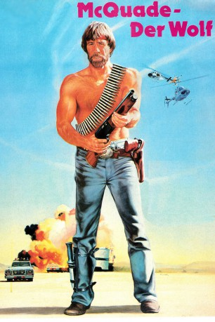
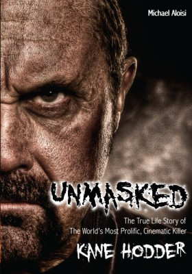

#3613 McQuade, der Wolf
Alternativ: Lone Wolf McQuade
 
 IMDB-Wertung: 6.3 / 10
IMDB-Wertung: 6.3 / 10  Metascore: 0
Metascore: 0 
Texas Ranger McQuade (Chuck Norris) ist bei Gangstern gefürchtet und sorgt mit einserner Hand für Gerechtigkeit. Als bei einem Überfall auf einen Waffentransport seine Tochter verletzt wird, sagt er den Waffenschiebern den Kampf an...
Jahr: 1983
Dauer: 107 Minuten
FSK: 18
Land: USA Studio: Orion PicturesTonspuren:
Untertitel: Deutsch,
Auflösung: 1080p (1920x1040) Größe: 8949 MB
Genre: Action, Thriller, Drama, Krimi, Western
Regisseur: Steve Carver
Drehbuch: Michael G. Cooney
Soundtrack:
Darsteller:
 Chuck Norris als J.J. McQuade
Chuck Norris als J.J. McQuade David Carradine als Rawley Wilkes
David Carradine als Rawley Wilkes- Barbara Carrera als Lola Richardson
- Leon Isaac Kennedy als Jackson
- Robert Beltran als Kayo
 L.Q. Jones als Dakota
L.Q. Jones als Dakota- Dana Kimmell als Sally McQuade
 R.G. Armstrong als T. Tyler
R.G. Armstrong als T. Tyler- Sharon Farrell als Molly
 William Sanderson als Snow
William Sanderson als Snow- Aaron Norris als Punk
-  Kane Hodder als Goon , uncredited
- Jorge Cervera Jr. als Jefe
- Daniel Frishman als Falcon
 John Anderson als Burnside
John Anderson als Burnside- Robert Arenas als Gas Station Attendant
- Tommy Ballard als Colonel
- Jeffrey Bannister als 2nd Agent
- Anthony E. Caglia als Intern
- Eli Cummins als Redneck #1
- Jesus 'Chuy' De La O als Beggar
- Oscar Hidalgo als Sgt. Garcia
- Robert Jordan als Bobby Drew
- Joe Kaufenberg als Bartender
- Susan Kaufenberg als Girl at Party
- Velma Nieto als Nurse #1
- Don Pike als First Gunman
- Gary Pike als Rustler
- Gil Reyes als Bouncer
- Martha Saldana als Reporter #2
- Hector Serrano als Cuban
- Deborah Shore als Photographer #1
- Richard Terschel als Goon #1
- Franco Toth als Reporter #1
- William J. Wagner als Pilot
Datei: X:\Person\Chuck Norris\McQuade, der Wolf (1983, FSK18, 1920x1040).mkv seit 10.05.2016
Festplatte: HD Collection-7+mehr(A-Z)+Person
 Es gibt insgesamt 17 Filme in der Gruppe 'Person\Chuck Norris'
Es gibt insgesamt 17 Filme in der Gruppe 'Person\Chuck Norris'